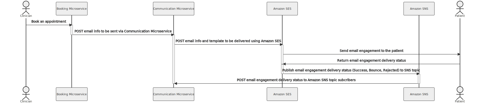
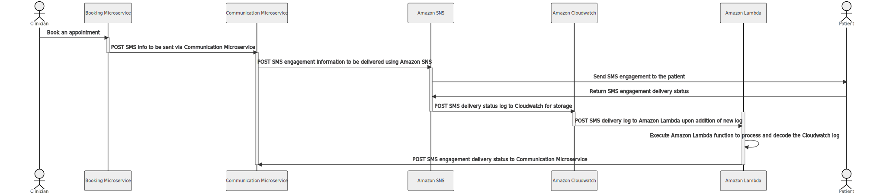

Portfolio
Reliable Communication Microservice using Amazon SES and SNS
While working at Verto Health as a Junior Full-Stack Developer, I was presented with a problem where our email and sms message delivery system was not 100% reliable due to vendor outages and other issues. Therefore, my task was to extend our communication microservice to be able to send messages interchangeably using multiple email and sms delivery providers/vendors. In addition, it also required the ability to track the message delivery status and react accordingly upon delivery failures. Thus, I set out on a two week long journey to research and set up Amazon Simple Notification Service (SNS) and Amazon Simple Email Service (SES) as new message delivery providers for our microservice. After having read through a seemingly unending series of AWS documentation pages about SNS and SES and some trial and error, I was able to design two workflows. One to send sms messages using Amazon SNS and one to send emails using Amazon SES. The two sequence diagrams attached below stand as artifacts of those two workflows and two weeks worth of research and development. At the end of those two weeks, I presented the new message delivery system to the senior developers and upper management and it was well-received and was approved to proceed to the next step of preparing it to be deployed to production. The new system is more reliable and although Amazon SES and SNS were harder to set up than our previous providers, they cost 50% less per sms or email message and are more scalable. While working on this project I had a great opportunity to take an ambiguous problem and flesh out a solution by comprehensively reading through AWS API documentation and then designing, developing, testing and finally presenting the solution to help improve reliability and reduce costs. This story has a lot more to explain about it, but it is too much to cover in a short paragraph. If you would like to hear more about it, feel free to contact me or bring me in for an interview :).
Not available because github repo is private and code is proprietary.
AWS, Python, Flask, Amazon SNS, Amazon SES, Amazon Cloudwatch, Amazon Lambda
Send email workflow using Amazon SES
Send sms workflow using Amazon SNS
Simplified sequence diagrams for the Person-To-Person (Clinician --> Patient) sms and email sending workflows using AWS services. Diagram generated on 2022-08-07
VERTO and EMR API Two Way Integration
While working at Verto Health as a Junior Full-Stack Developer, I was assigned to manage a two way integration project between our Flow Booking Application and a EMR (Electronic medical records) API database. This would allow clinics across Ontario to gain access to all the advantages and utilities provided by our Flow booking application while maintaining their current use of their EMR's CIS clinical management system for patient data. During the course of 4 weeks, I met frequently with our product team and developers from the EMR API client's dev team in order to plan and test the two workflows I had been developing. The first workflow pulls doctors and their schedules from the EMR API system and then creates matching units and availability on our Flow application. The second workflow is triggered after an appointment is booked on Flow. It queries the EMR Booking API for patient status, doctors and their slot availability and then books the appointment in the EMR system. Once the integration is fully tested deployed from staging to production it will allow thousands of patients to book appointments at their local clinics using Verto applications and have those appointments appear in the clinic’s clinical management system. Working on this project gave me an opportunity to gain experience managing and planning software development projects as well as reinforce my communication skills as a developer. Looking back retrospectively, a critical aspect which contributed to the success of this project was frequent and clear communication between myself, the product team and developers from EMR API dev team.
Not available because github repo is private and code is proprietary.
Integration, Python, Flask
A simplified workflow diagram for the two way integration between Verto and EMR API. Diagram generated on 2022-04-24

Javmos
This is a Java based graphing calculator. It can handle polynomials, sine, cosine, tangent, logarithmic, and natural log type functions. It finds the first and second derivatives and the critical points.
Java, Objected-Oriented Programing